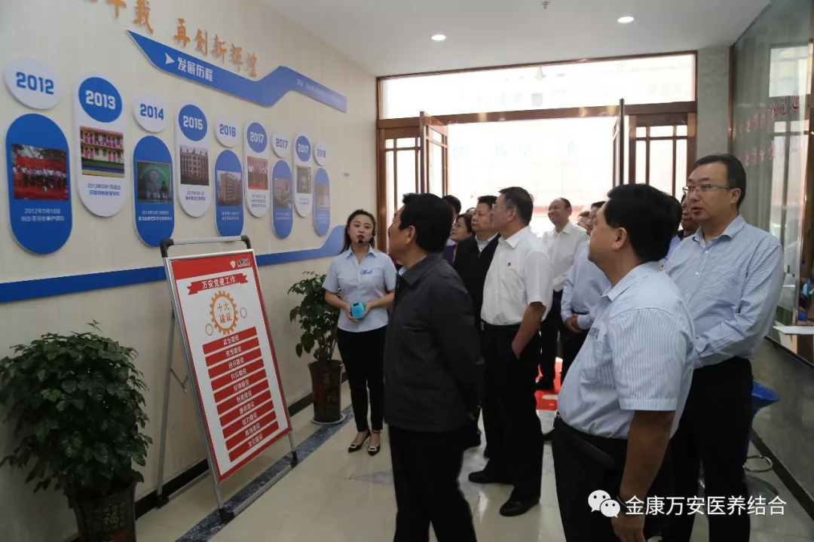
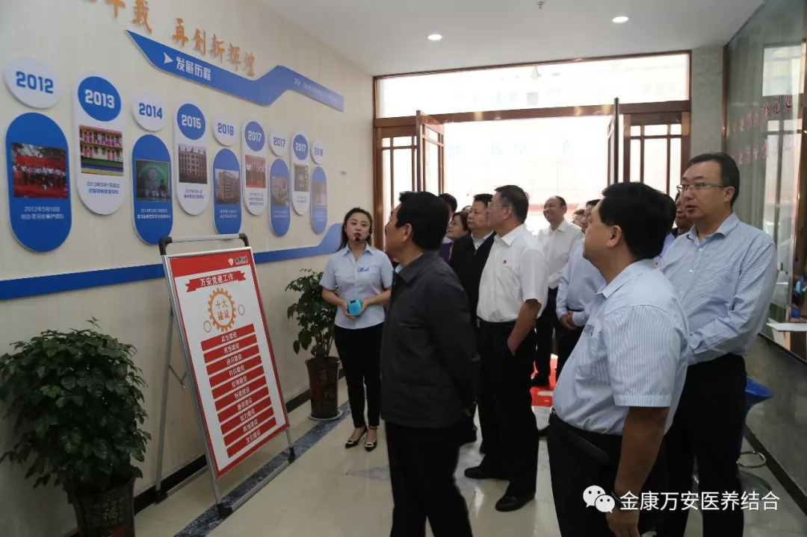
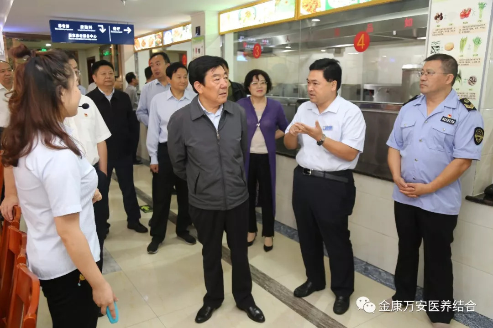
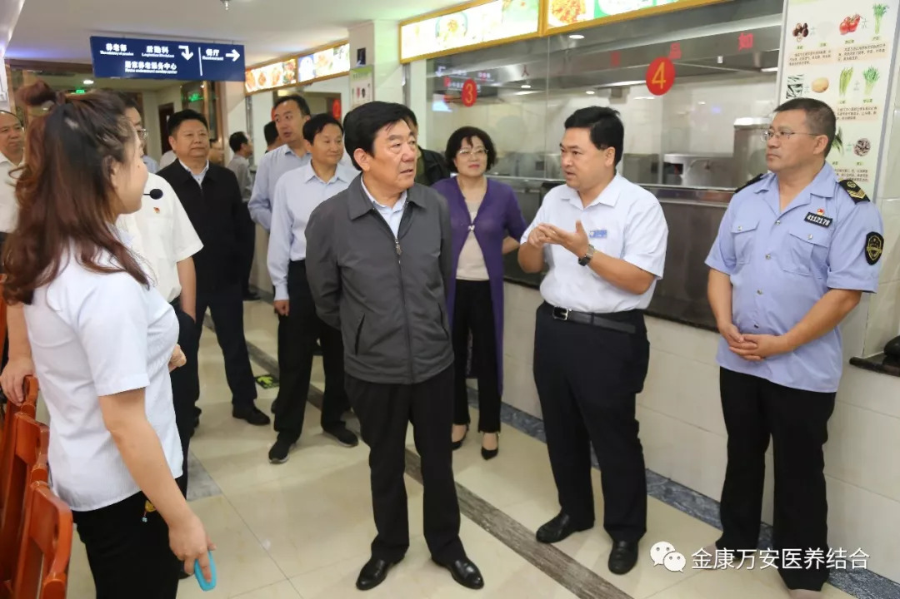
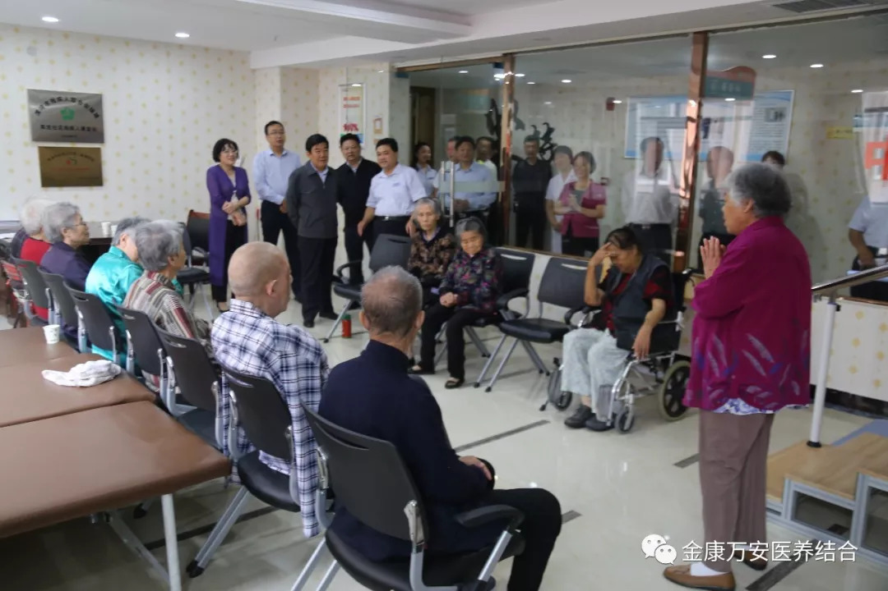
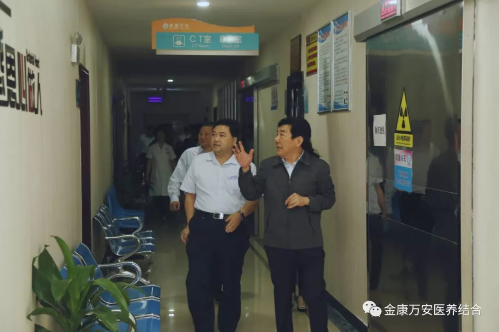
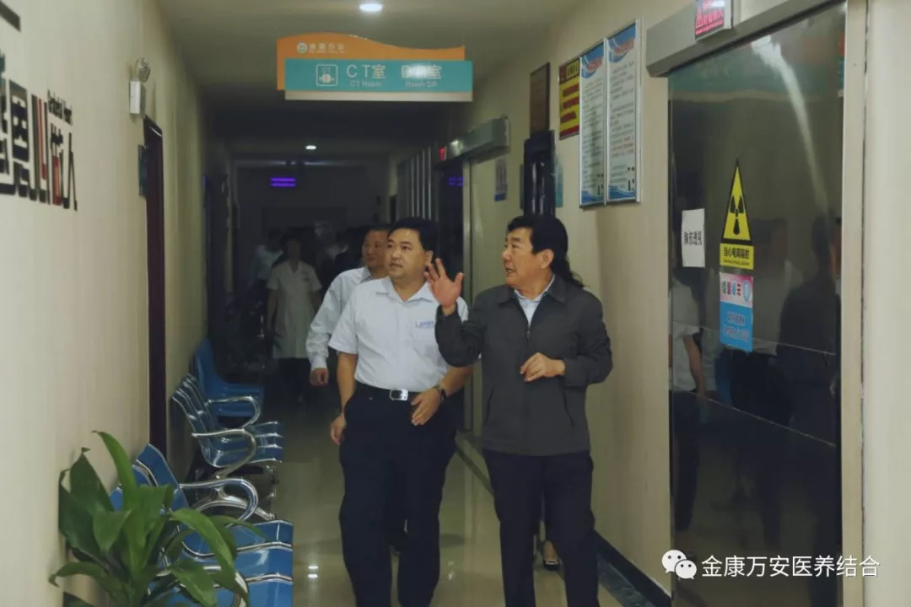

万安康复医院新闻
漯河市人大常委会主任曹存正一行 莅临漯河万安康复医院、万安老年公寓视察食品安全工作
人气: "" 时间：2018-09-19
2018年9月19日上午，漯河市人大常委会主任曹存正一行领导莅临漯河万安康复医院、万安老年公寓视察食品安全工作，院长王卫峰、业务院长刘洋、后勤院长杨延顺等院领导陪同视察。
 


在膳食科，重点视察了餐厅环境及厨房，听取了王卫峰院长关于我院有关食品安全工作情况的全面介绍，充分肯定了我院为保证食品安全所做的各项工作，同时要求下步工作中要把食品安全工作作为一项重要工作来抓，落实食品安全责任制，整治和消除各种食品安全隐患，杜绝院内发生任何食品安全事故，确保就餐人员舌尖上的安全。
 

曹主任一行来到活动大厅看望老人


视察结束后，曹主任对我院落实食品安全工作取得的成绩给予了肯定，并希望我院继续落实食品安全监管责任、优化监管机制，进一步提高食品安全监管工作水平，为老人、患者、医护人员等营造安全的就餐环境。
 
